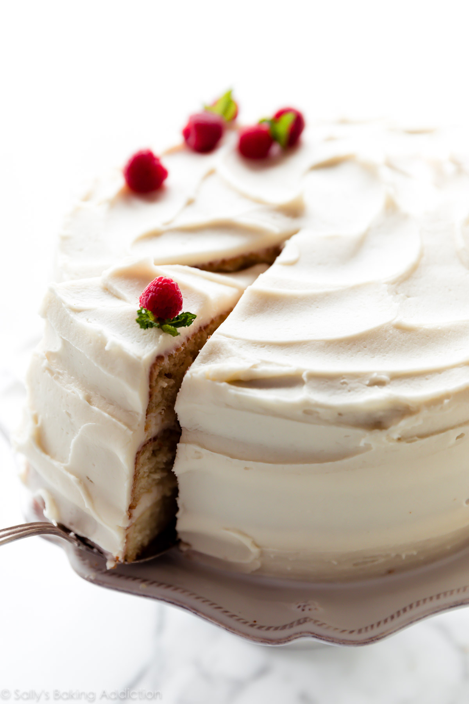
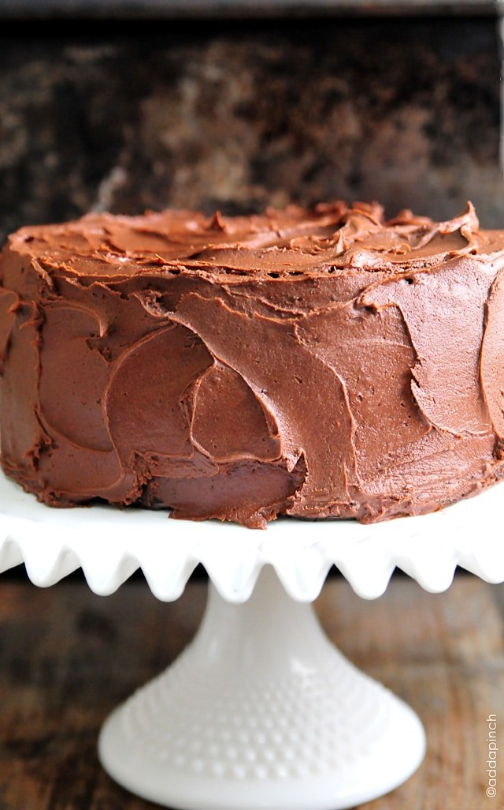

With its outstanding vanilla flavor, pillowy soft crumb, and creamy vanilla buttercream, this is truly the best vanilla cake I’ve ever had. And after 1 bite, I guarantee you’ll agree.
Out of all the cake recipes on my website, there’s a glaring absence. There’s white cake with a pristine soft crumb, vanilla naked cake with a flavorful tight crumb, and checkerboard cake with a whimsical design. What about a classic 9 inch vanilla cake draped in vanilla buttercream? I already have homemade vanilla cupcakes and a 6 inch vanilla cake covered. Now in all its crowning glory (and after plenty recipe testing catastrophes), I present you with cake perfection:
Out of all the cake recipes on my website, there’s a glaring absence. There’s white cake with a pristine soft crumb, vanilla naked cake with a flavorful tight crumb, and checkerboard cake with a whimsical design. What about a classic 9 inch vanilla cake draped in vanilla buttercream? I already have homemade vanilla cupcakes and a 6 inch vanilla cake covered. Now in all its crowning glory (and after plenty recipe testing catastrophes), I present you with cake perfection:
View recipie
 The one thing that sets this strawberry cake apart from others? Reduce fresh strawberry puree down and add to the best white cake batter.
The one thing that sets this strawberry cake apart from others? Reduce fresh strawberry puree down and add to the best white cake batter. This strawberry cake completely blew me away. After years of mediocre from-scratch strawberry cakes, my expectations were pretty low. It was time to taste test my efforts. Biting into the first pastel pink forkful was the moment of truth… I cried tears of joy. Or were those actual tears because I just dirtied every dish with all this strawberry cake recipe testing? Let’s get down to business. Watch me make the recipe below:
View recipie

The Best Chocolate Cake Recipe – A one bowl chocolate cake recipe that is quick, easy, and delicious! Updated with gluten-free, dairy-free, and egg-free options!
The best chocolate cake recipe. Ever? There are plenty of claims for the best chocolate cake recipe. I get that. But with one bite of this decadent, moist chocolate cake with chocolate frosting, every single person around the table commented that this was the best chocolate cake they’d ever tasted. Here’s another great thing about this recipe. The cake batter really can be made in a bowl without the use of a heavy duty mixer. Of course, that just makes things easier, but this is easily a recipe my Grandmother would have enjoyed making in her tiny kitchen with a whisk and a bowl. And I’m sure it would have turned out perfectly, too
The best chocolate cake recipe. Ever? There are plenty of claims for the best chocolate cake recipe. I get that. But with one bite of this decadent, moist chocolate cake with chocolate frosting, every single person around the table commented that this was the best chocolate cake they’d ever tasted. Here’s another great thing about this recipe. The cake batter really can be made in a bowl without the use of a heavy duty mixer. Of course, that just makes things easier, but this is easily a recipe my Grandmother would have enjoyed making in her tiny kitchen with a whisk and a bowl. And I’m sure it would have turned out perfectly, too